Gaussian rendering
This method draws a normalized symmetric 2D or 3D Gaussian function integrated over the voxel volume for every localized molecule, with a standard deviation equal to the computed, or user-specified localization uncertainty. The visualized molecules are added sequentially to the final super-resolution images. The contribution of one molecule to the voxel intensity at the integer position 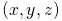 is computed as
| 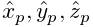 |
where indexes the molecules, and the parameters 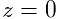. Here 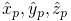 is the estimated position of a molecule, 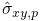 is the corresponding lateral localization uncertainty, 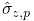 is the axial localization uncertainty,
| 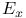 | 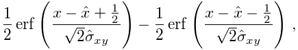 | 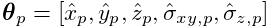 | ||
| 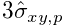 | 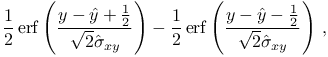 | |||
| 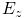 | 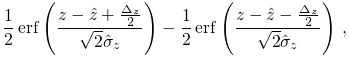 |
and 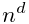 is the size of a voxel in the axial direction. Contributions from one molecule are limited to an interval given by a circle with radius of 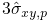 around the molecule position in lateral dimension and by 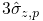 in axial direction. For data visualization in the 2D case, 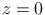 and the term 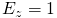.
See also
![[LOGO]]()